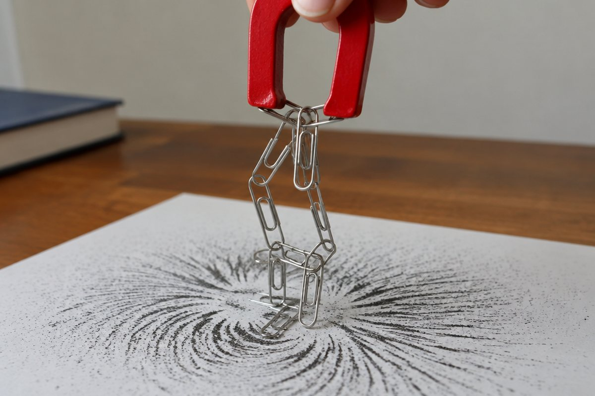

자석은 어떤 물체를 끌어당길까?

냉장고 문에 붙은 자석, 필통 뚜껑의 자석! 자석은 왜 어떤 것은 붙고 어떤 것은 안 붙을까요?
자석에 붙는 물체, 붙지 않는 물체
자석은 철로 된 물체를 끌어당겨요. 클립, 철 못, 철 숟가락처럼 철로 만든 물체는 자석에 붙어요.
나무, 플라스틱, 유리, 종이, 고무로 만든 물체는 자석에 붙지 않아요. 알루미늄 캔이나 동전처럼 '금속'이어도 철이 아니면 붙지 않아요.
철 캔은 자석에 붙지만 알루미늄 캔은 붙지 않아서, 재활용 공장에서는 자석으로 두 캔을 골라내요.
자석의 극
자석에서 철로 된 물체가 가장 많이 붙는 부분을 '자석의 극'이라고 해요. 막대자석은 양쪽 끝이 극이에요.
자석에는 N극과 S극, 두 개의 극이 있어요. 자석을 아무리 잘라도 조각마다 다시 N극과 S극이 생겨요.
막대자석을 클립 상자에 넣었다 빼면 양쪽 끝에 클립이 가장 많이 붙어 나와요.
밀고 당기는 자석
두 자석을 가까이 가져가면, 같은 극끼리는 서로 밀어내고 다른 극끼리는 서로 끌어당겨요.
즉 N극과 N극, S극과 S극은 밀어내고 N극과 S극은 끌어당겨요.
자석 장난감 기차는 다른 극끼리 마주 보게 해야 착 붙어요.
자석은 방향을 알려 줘요
막대자석을 물에 띄운 접시에 올려놓으면 빙글 돌다가 N극은 북쪽, S극은 남쪽을 가리키며 멈춰요.
이 성질을 이용한 것이 '나침반'이에요. 나침반 바늘도 자석이라서 늘 북쪽과 남쪽을 가리키지요. 그래서 나침반 가까이에 자석을 대면 바늘이 엉뚱한 쪽으로 움직여요.
길을 잃었을 때 나침반으로 북쪽을 찾을 수 있어요.
생활 속 자석
자석은 우리 생활 곳곳에서 쓰여요. 냉장고 문, 자석 칠판, 가방 여밈 장치, 자석 다트 등이 있어요.
자석은 사이에 다른 물체가 있어도 철로 된 물체를 끌어당길 수 있어요. 그래서 종이를 사이에 두고도 자석으로 칠판에 붙일 수 있어요.
핵심 낱말
- 자석
- 철로 된 물체를 끌어당기는 물체
- 자석의 극
- 자석에서 철을 가장 세게 끌어당기는 부분
- N극
- 자유롭게 움직이게 두면 북쪽을 가리키는 자석의 극
- S극
- 자유롭게 움직이게 두면 남쪽을 가리키는 자석의 극
- 나침반
- 자석 바늘로 방향을 알려 주는 도구
한 줄 정리
- 자석은 철로 된 물체를 끌어당겨요.
- 자석에는 N극과 S극이 있고, 같은 극은 밀고 다른 극은 당겨요.
- 자석의 N극은 북쪽을 가리키며, 이를 이용한 것이 나침반이에요.
학교 교육과정 연결
- [4과09-01] 자석과 여러 가지 물체를 가까이했을 때 나타나는 현상을 관찰하고, 자석과 자석에 붙는 물체 사이에 작용하는 힘의 특징을 말할 수 있다.
- [4과09-02] 자석과 자석을 가까이했을 때 나타나는 현상을 관찰하여 그 특징을 자석의 극과 관련지어 설명할 수 있다.
- [4과09-03] 자석을 이용하여 일상생활을 편리하게 하는 장치를 설계할 수 있다.